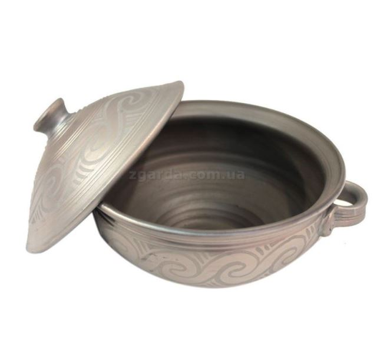

Історія української кераміки. Різновиди
Історична «колиска» української кераміки - культура Трипілля і стародавньої Русі. Згодом в різних регіонах країни стали з'являтися центри виробництва посуду з глини, які використовували не тільки різні технології, але і різні сорти глини, що і послужило причиною отримання ними своїх особливих назв. На даний момент, українська традиційна кераміка має кілька загальноприйнятих видів та назв:
Гаварецька кераміка
Батьківщина цього унікального різновиду керамічного посуду, який ще називають «сивий», «закурений», «задимлений» «чорнолощений» - Гавареччина, на Львівщині. Ті, кому довелося вперше на власні очі побачити гаварецьку кераміку, не можуть повірити, що вона не виготовлена з якогось особливого сорту глини і не піддавалася фарбуванню. Насправді, властивий їй неповторний «темний, як ніч» або непередаваний сріблястий колір є результатом особливої технології виготовлення. Її секрет - в особливій техніці випалювання. Тривалість процесу складає 12 годин, а температура, при якій відбувається випал, досягає 1000 °С.
За легендою, що дійшла до наших днів, саме через постійний дим, що виходить від безлічі печей, примхлива пані Тереза, дружина князя Вишневецького, наполягла на тому, щоб прогнати з села Білий Камінь абсолютно всіх майстрів гончарної справи. Так, серед густих і прихованих високо в горах лісів Золочівщини, що на Львівщині, на віддалі від цивілізації та доріг, і з'явилося поселення, що отримало назву Гавареччина. Переселенці продовжували займатися улюбленою справою, живучи далеко від поселень інших людей, і заробляючи своїм ремеслом на хліб. Відповідно до технології, піч під час випалу, щоб уникнути проникнення в неї кисню, щільно засипають землею. Посуд, що знаходиться в такій печі, сильно розжарюється і вбирає в себе кіптяву.
Місто Косів в Івано-Франківській області, від якого і пішла назва цього неймовірного різновиду керамічних виробів, на сьогоднішній день вважається центром гуцульської культури. У грудні 2019 року Косівська кераміка була удостоєна внесення в Репрезентативний список нематеріальної культурної спадщини людства ЮНЕСКО.
Молочна кераміка
Цей різновид відноситься до одного з найдавніших серед тих всіх, що дійшли до наших днів, технологій виробництва кераміки. Особливістю процесу виступає «молочення» - занурення майбутнього виробу в молоко, після чого його обпалюють при високій температурі (від 270 °С до 350 °С). Така обробка сприяє набуттю глиною більш м'якого відтінку, який може варіюватися, залежно від жирності молока і рівня вмісту в ньому білка, від світло-коричневого до насиченого темного і навіть чорного. Якщо ж в молоці розмішати цукор, то можна домогтися цікавого червонуватого відтінку.
Безумовна перевага цієї техніки: виняткова екологічна чистота готової посуди, відсутність в ній токсичних речовин, чудові властивості зберігання продуктів. Але і ставитися до неї необхідно дбайливо - мити вручну, без використання абразивних і хімічних засобів. Наші предки просто ополіскували молочену посуду і виставляли її сушитися під палючими сонячними променями.